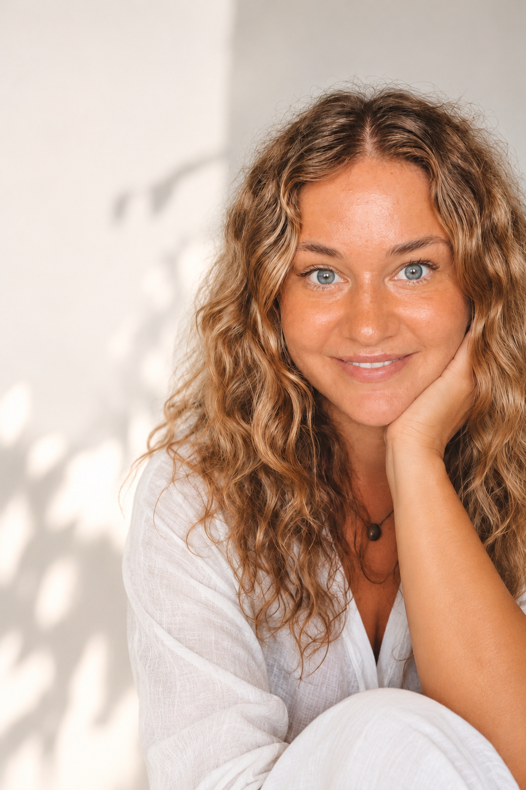

Специалисты
Здесь можно познакомиться с подходом специалиста и выбрать того, с кем вам будет комфортно работать. Каталог будет пополняться.
Выбрать специалиста
Нажмите на имя, чтобы узнать подробнее о подходе и формате работы.

Анна АноповаПсихолог, арт-терапевт · онлайн и очно
Пока нет специалистов по выбранным параметрам. Попробуйте изменить фильтры.
Каталог будет пополняться: здесь появятся специалисты с разными подходами и направлениями работы.
Коллегам
Если вам близка идея «Светлее» и вы хотели бы стать частью платформы, расскажите немного о своей работе. Мы обсудим сотрудничество и подготовим вашу страницу вместе.
Анкета для специалистов